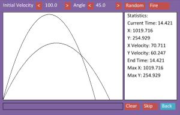
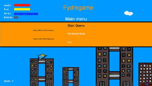

Projects
Ascital
An in-browser text based fractal renderer.
Webtris: Javascript Tetris Clone

A browser-based tetris clone. Not much more to this one.
Click here to play!
Boids Flocking Simulation

A javascript simulation using the boids flocking algorithm. Rendered using p5.js.
Click here to try it in the browser.
Fydrechip: Chip-8 Virtual Machine

A virtual machine/emulator written in C++ using SFML. View the source on GitHub.
Mechanics Simulator
My final year project for college. It is written in Java and has an android and desktop version.
Infinite 2D Sidescrolling Game
A 2D side-scrolling game written in C++. It uses a source-only engine created by Chris Rook.